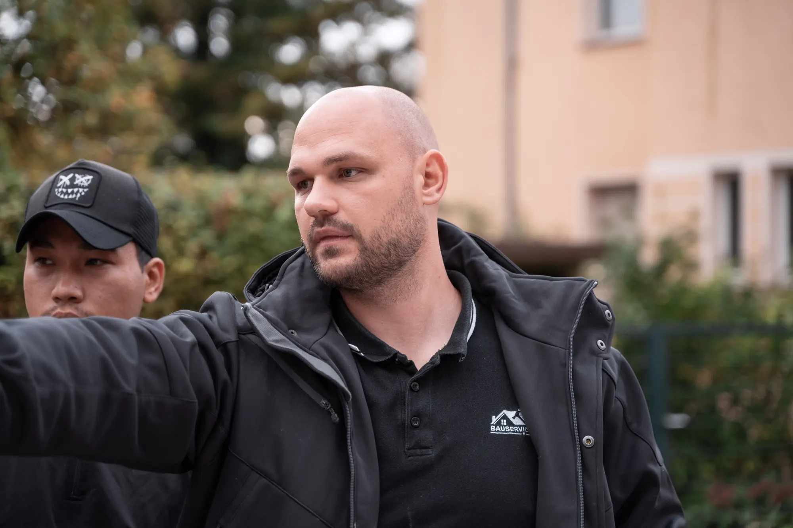
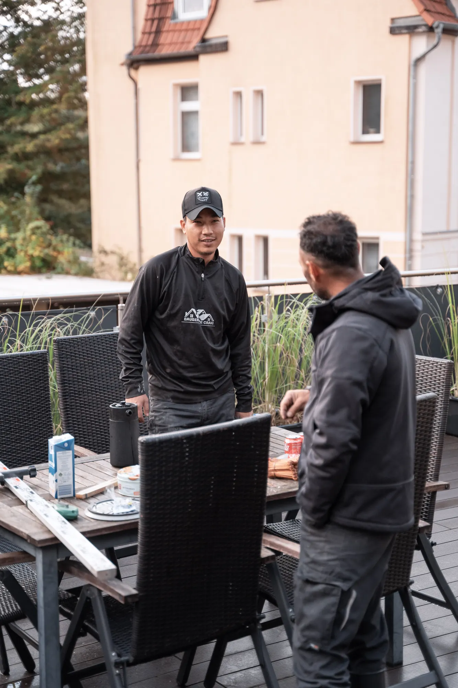
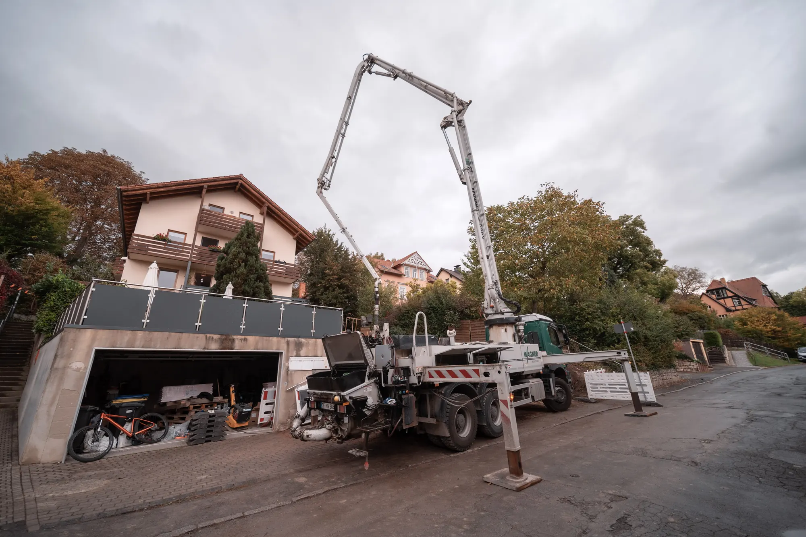
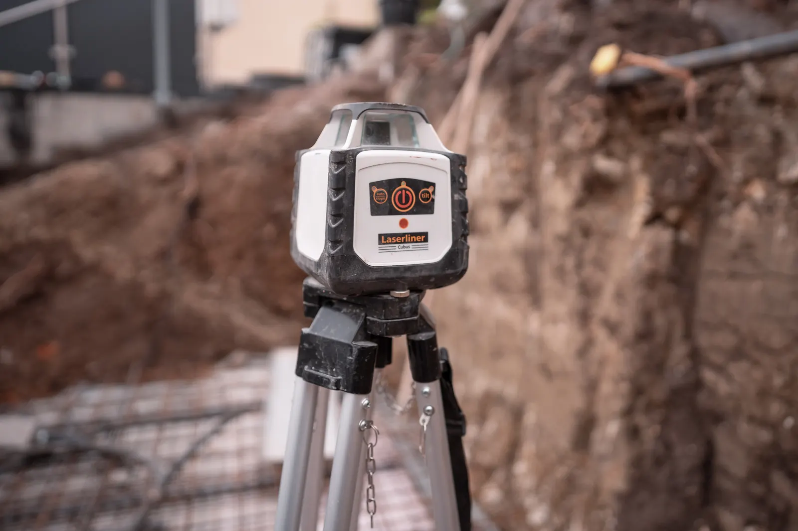
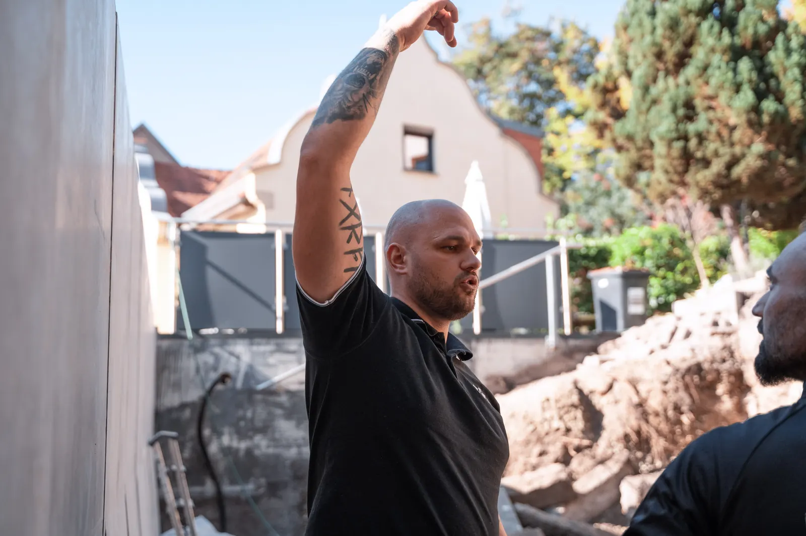
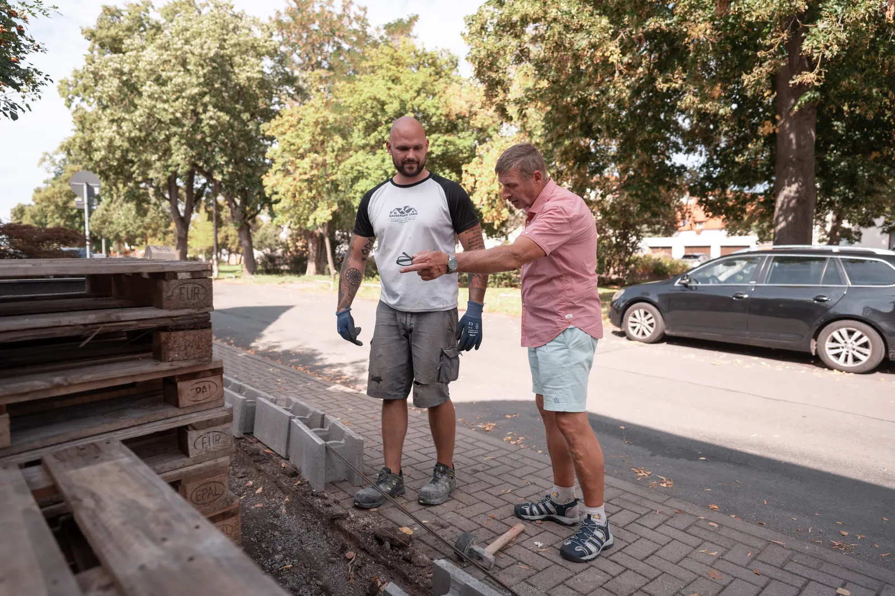
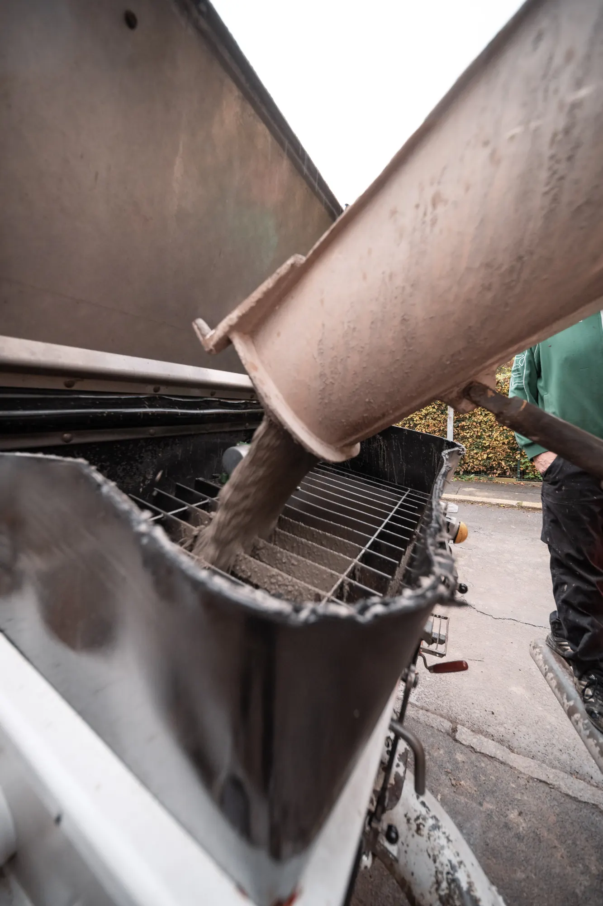

Bauleitung und Baubegleitung in Thüringen
Wir koordinieren Gewerke, prüfen jeden Bauabschnitt und erkennen Mängel, bevor sie verdeckt werden. Für private Bauherren.
Was wir für Sie übernehmen
Bei Neubau und Sanierung, in Bad Berka, Erfurt, Weimar, Jena und ganz Thüringen.
-

Gewerke koordinieren
Erdbau, Rohbau, Dach, Fenster, Installation: Auf einer Baustelle greifen viele Gewerke ineinander. Wir stimmen die Firmen untereinander ab, damit jeder zur richtigen Zeit vor Ort ist und niemand auf den anderen wartet.
-

Termine und Bauablauf
Wir planen den Ablauf mit Ihnen, behalten Termine im Blick und melden uns, sobald etwas vom Plan abweicht. So wissen Sie jederzeit, wo Ihr Bauvorhaben steht.
-

Qualität vor dem Verdecken
Bewehrung, Abdichtung, Dämmung und Unterbau sind später nicht mehr zu sehen. Wir prüfen diese Bauabschnitte, bevor sie verschlossen werden, und halten den Zustand mit Fotos fest.
-

Maße und Höhen kontrollieren
Stimmen Höhen, Gefälle und Abmessungen nicht, wird es später teuer. Wir messen nach und klären Abweichungen direkt mit der ausführenden Firma.
-

Mängel früh erkennen
Als DEKRA-zertifizierter Sachverständiger für Bauschäden erkennt Marvin Craig Mängel, solange sie sich noch einfach beheben lassen. Jeder Mangel wird dokumentiert und bis zur Behebung verfolgt.
-

Abnahme begleiten
Bei der Abnahme stehen wir an Ihrer Seite, prüfen die Leistung und halten offene Punkte fest. So unterschreiben Sie nichts, was nicht in Ordnung ist.
Ein Bauunternehmer auf Ihrer Seite.
Marvin Craig führt selbst Baustellen und weiß, wie die einzelnen Gewerke arbeiten und wo es typischerweise hakt. Diese Erfahrung bringt er in die Begleitung Ihres Bauvorhabens ein.
Als DEKRA-zertifizierter Sachverständiger für Bauschäden sieht er zudem, welche Fehler später zu Schäden führen. Sie haben damit einen festen Ansprechpartner, der Ihre Interessen auf der Baustelle vertritt.

So begleiten wir Ihr Bauvorhaben
Erstgespräch
Wir besprechen Ihr Vorhaben, den Stand der Planung und welche Unterstützung Sie brauchen.
Ablauf festlegen
Gemeinsam legen wir fest, welche Bauabschnitte wir prüfen und wann wir vor Ort sind.
Begleitung vor Ort
Wir sind zu den vereinbarten Terminen auf der Baustelle, prüfen, dokumentieren und stimmen uns mit den Firmen ab.
Abnahme
Zum Schluss begleiten wir die Abnahme und achten darauf, dass offene Punkte erledigt werden.
Häufige Fragen
Was ist der Unterschied zwischen Bauleitung und Baubegleitung?
Bei der Bauleitung koordinieren wir die Gewerke und steuern den Ablauf auf der Baustelle. Bei der Baubegleitung prüfen wir zu festen Zeitpunkten, ob fachgerecht gebaut wird, und vertreten dabei Ihre Interessen. Beides lässt sich kombinieren.
Wann sollte die Baubegleitung beginnen?
Am besten vor Baubeginn, spätestens vor den Erdarbeiten. Viele wichtige Details wie Abdichtung, Bewehrung oder Dämmung sind später verdeckt und lassen sich dann nur noch schwer prüfen.
Begleiten Sie auch Bauvorhaben anderer Firmen?
Ja. Wir begleiten Ihr Bauvorhaben auch dann, wenn andere Firmen die Arbeiten ausführen, zum Beispiel ein Bauträger oder Generalunternehmer.
Was kostet eine Baubegleitung?
Das hängt von der Größe des Bauvorhabens und der Zahl der Termine vor Ort ab. Nach einem Erstgespräch erhalten Sie ein transparentes Angebot.
In welchen Orten sind Sie tätig?
Unser Sitz ist in Bad Berka. Wir begleiten Bauvorhaben in Erfurt, Weimar, Jena, Apolda und in ganz Thüringen.
Sie planen ein Bauvorhaben? Wir begleiten Sie.
Erzählen Sie uns kurz, was Sie vorhaben und wo Sie gerade stehen. Wir melden uns persönlich bei Ihnen.